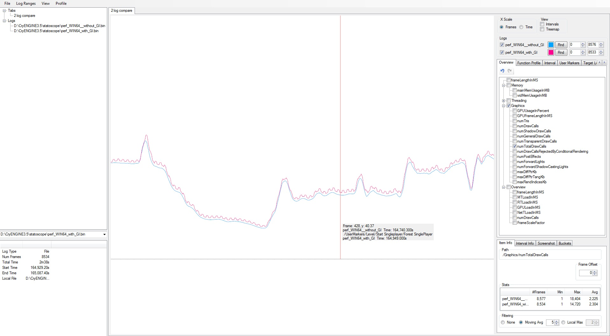
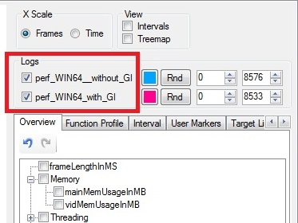
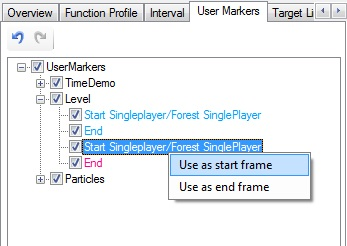
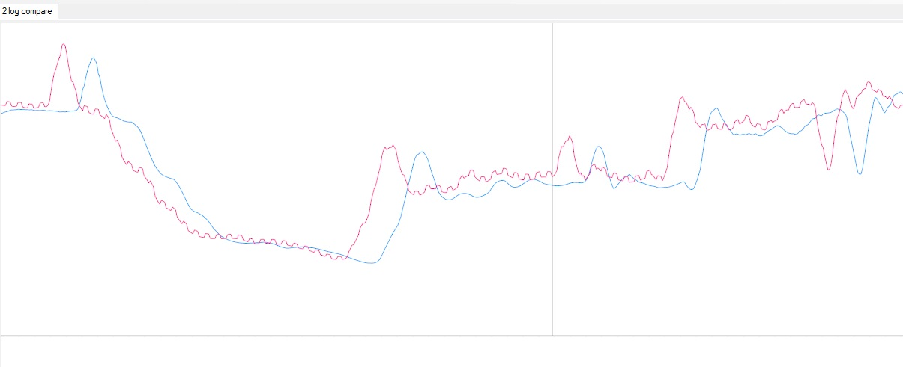
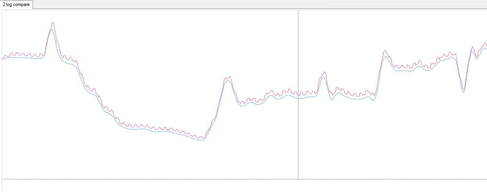

Overview
Comparoscope allows you to load more than one log into the same tab, this makes it very easy to compare repetitions of the same game scenes and most importantly measure the impact of changes between runs.
To use this feature, then at the same time drag more than one log into the tool. One log will be the base (named in the tab) and the other will be sub-entries in the Overview hierarchy.
Chapters:
For example, here's the Forest level timedemo run, with and without Global Illumination enabled. To make it easier to read the list is filtered down to one information track (numTotalDrawCalls).

Lining up the Logs
In the top right hand corner (above the Overview, Function Profile etc tabs) are the active logs being displayed. The logs can be enabled and disabled by simply ticking/un-ticking the relevant checkboxes.

The colors for the different logs are also defined here. (Rnd = random color button).
Also available are the number spinners for each log. The first one is for the starting point (0 and 0) and the 2nd is the final frame in the log (8576 and 8533).
In the Overview picture (top of this article) the Start SinglePlayer/Forest SinglePlayer is used as the reference point.
With the reference point chosen, use the spinners to shift one log or the other left or right to make the same reference point on each track line up.
Alternatively, in the User Markers tab you can right click on a user marker and set the start/end frames.

As slight changes exist between runs (longer loading times etc.), then slight imperfections are introduced to the system. Despite this, the system still provides a very useful method for the comparison of two logs.
Before

After
